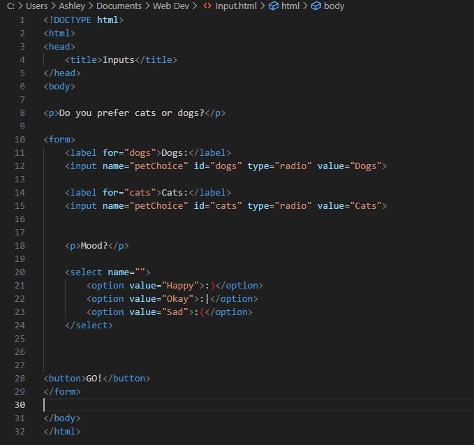

I am an experienced motor claims handler and have worked for a number of motor claim firms. I have also worked for a home claims insurer, but I have always preferred the motor side as this is where I started and where most of my knowledge lies. I have worked within the insurance world for almost a decade and I have enjoyed my time in the industry, but now I am looking for a career change. I have been very excited and found myself to be very passionate about coding and development. I look forward to being able to find a career encompassing this.
Below are links to see my professional and personal life, and 3 of my current interests.
Below are 3 of my biggest intrests and activities that I currently participate in.
I enjoy playing board games with my friends and family. In recent years I have started playing Dungeons and Dragons, and re-started playing Yu-Gi-Oh.
Go to D&D Beyond!I have always been a fan of sport. I grew up playing a variety of sports and participated in competitions. The main sports I participated in were football, basketball, cricket, tennis, and athletics. I recently took up playing golf.
Go to the BBC!In 2024 I started a Level 5 Web Development course and I am thoroughly enjoying it.
 See what I have learnt!